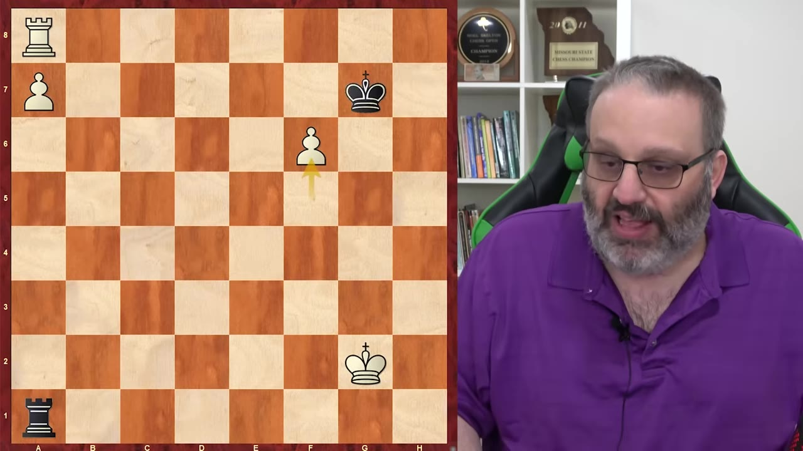
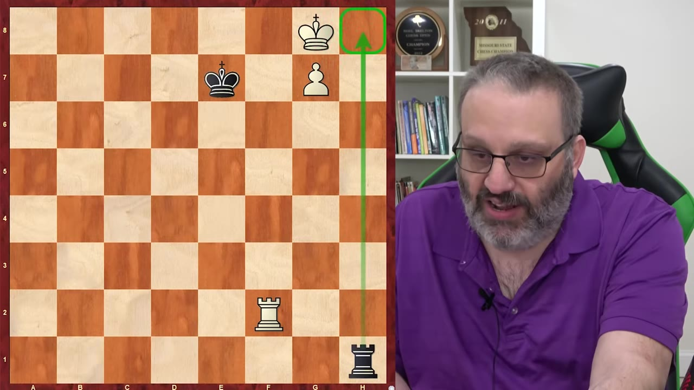
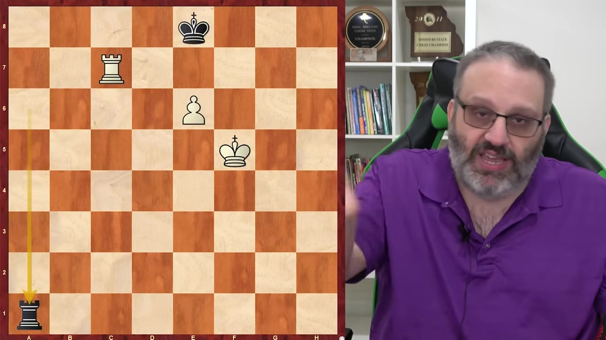
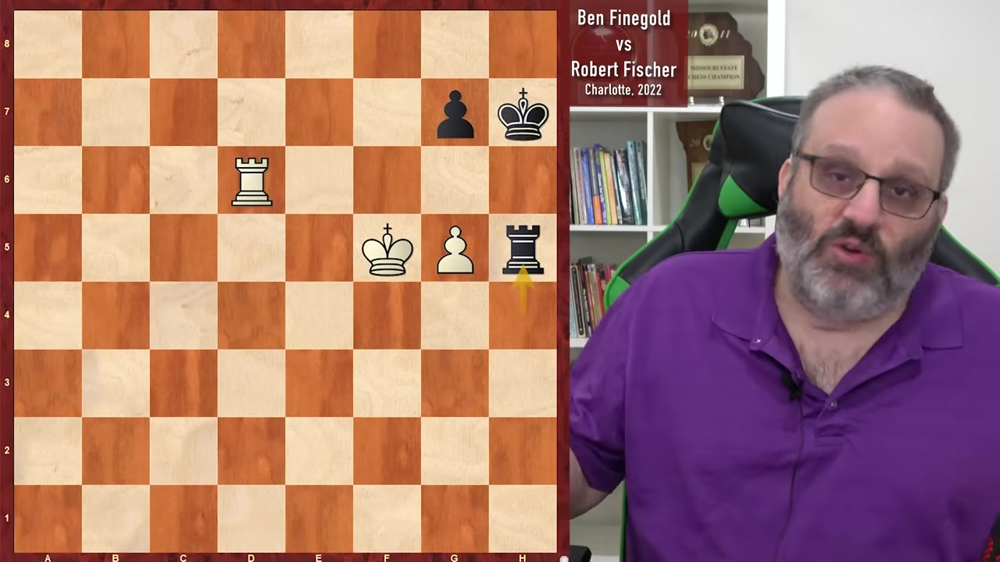

Grandmaster Ben Finegold breaks down the endgame positions that decide the most club-level games — rook-and-pawn endings, king-and-pawn opposition, and the practical art of winning drawn positions and drawing lost ones.
Watch on YouTubeEndgames are psychologically different from the rest of a game. Both sides are tired, expectations are set, and a result more favorable than anticipated often arrives precisely when the guard goes down. Finegold's practical advice: win drawn endgames, draw lost ones.
Most endgames are rook-and-pawn or king-and-pawn endings. The reason is structural — rooks start trapped in the corners and survive the piece trades of the opening and middlegame. Meanwhile, the rook and king are the two pieces that gain value in the endgame.

The most consequential distinction in rook-and-pawn endings: a rook behind a passed pawn on the 7th, with the defending king on the 2nd rank. With g- or h-pawns it is an easy draw — the rook oscillates on the file and the king stays put.
But with an f-pawn, the attacker wins. The defending king has no safe squares — moving to the 3rd rank allows a check followed by promotion; blocking with the king allows a skewer (rook to the h-file, then the rook takes and checks).
The practical lesson applies to pawn-majority positions: if you are attacking, you want to be left with an f-pawn. If you are defending, you must trade down to leave your opponent with a g- or h-pawn. This single-pawn distinction decides games at every level.
When your own king is blocking your passed pawn, you cannot simply push forward — your opponent's king will check you forever. The winning technique, known since the 1400s, is called "building a bridge."
You check the opposing king away, then interpose your rook to block checks while your king escapes. The rook "bridges" across to shelter your king from further checks, allowing the pawn to promote. The key insight: you must force the opposing king far enough away that your rook can block from the side.

When you are defending a rook-and-pawn ending and your king is cut off behind the pawn, there is one drawing move: place your rook on the 3rd rank (the Philadelphia position).
The rook stops the enemy king from advancing. If the king checks from the side, the rook moves up or down the file. If the king advances the pawn to the 6th rank, retreat the rook to the back rank and check from behind — the opposing king now has nowhere to hide.

Finegold shares a practical endgame from a Charlotte tournament where his opponent — rated 2060 and in time trouble — blundered a theoretically drawn rook-and-pawn ending.
With two pawns against one, the position should be a draw. But Finegold set a trap: he let his opponent capture a pawn, creating a situation where one winning move (rook to d8) left Black with no legal moves that prevent mate. The lesson: even "drawn" positions have hidden resources, and time pressure magnifies theoretical gaps.

The core principle of king-and-pawn endings: both sides want their king in front of the pawn. When your king leads by two squares, you win — regardless of whose turn it is. When the opponent's king leads, it is a draw.
The mechanism is opposition — when kings stand two squares apart on the same file or rank, the side to move loses the tempo and must yield ground. A subtler variant, the distant opposition, works the same way on the same rank with one square between the kings.